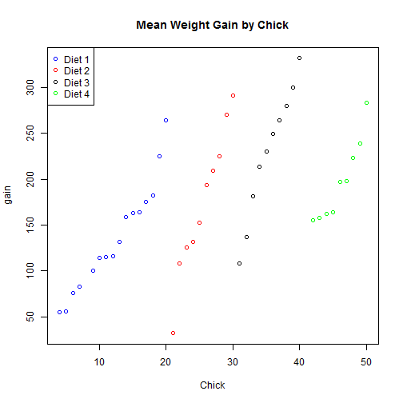

Elaine Carson
##
## Attaching package: 'dplyr'
##
## The following object is masked from 'package:stats':
##
## filter
##
## The following objects are masked from 'package:base':
##
## intersect, setdiff, setequal, union

## Diet gain
## 1 1 136.1875
## 2 2 174.0000
## 3 3 229.5000
## 4 4 197.6667